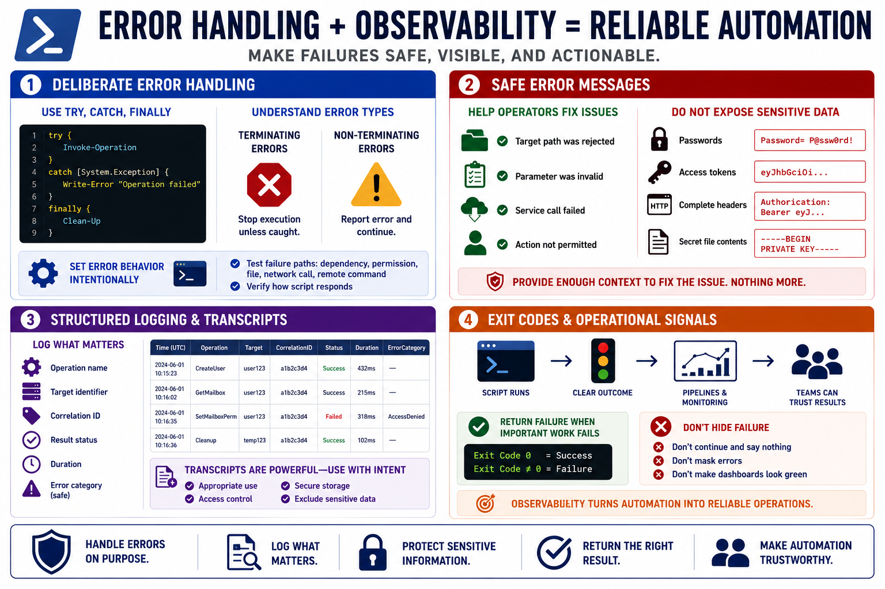

Error Handling, Logging, and Observability
Connecting to LMS... Progress: in progress

Narration
Reliable PowerShell automation needs deliberate error handling. Try, catch, and finally blocks can make cleanup and failure behavior explicit, but scripts also need to understand terminating and non-terminating errors. Some cmdlets report an error and continue unless configured otherwise. For critical operations, set error behavior intentionally and test how the script responds when a dependency, permission, file, network call, or remote command fails.
Safe error messages should help operators fix problems without exposing sensitive information. It is useful to know that a target path was rejected, a parameter was invalid, or a service call failed. It is not useful to print passwords, access tokens, complete headers, secret file contents, or internal details that do not help the operator. Error handling should preserve enough context to troubleshoot while protecting data that should not spread.
Structured logging improves observability. Instead of only writing free-form text, scripts can record operation names, target identifiers, correlation IDs, result status, duration, and safe error categories. Transcripts can be valuable for administrative accountability, but they can also capture more than intended. Decide when transcripts are appropriate, where they are stored, who can read them, and what sensitive values must never be written during a transcripted session.
Exit codes and operational signals matter for scheduled jobs, CI pipelines, and monitoring systems. A script should return failure when important work failed, not silently continue and make a dashboard look green. Observability is what lets teams operate scripts responsibly after deployment. Secure automation is not only protected from bad input; it is also understandable when something goes wrong.